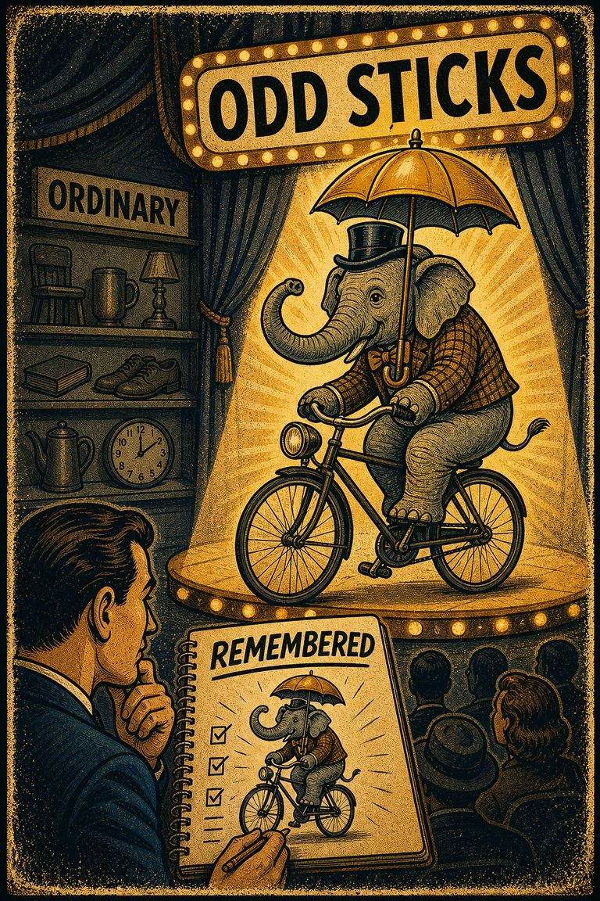
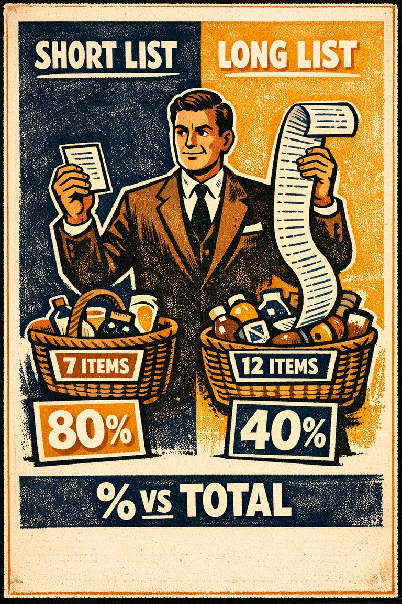
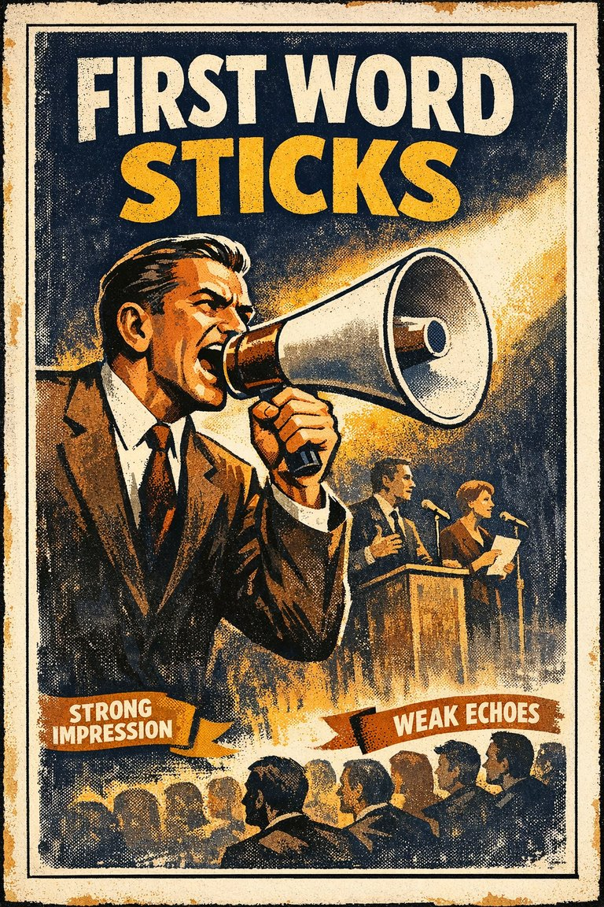
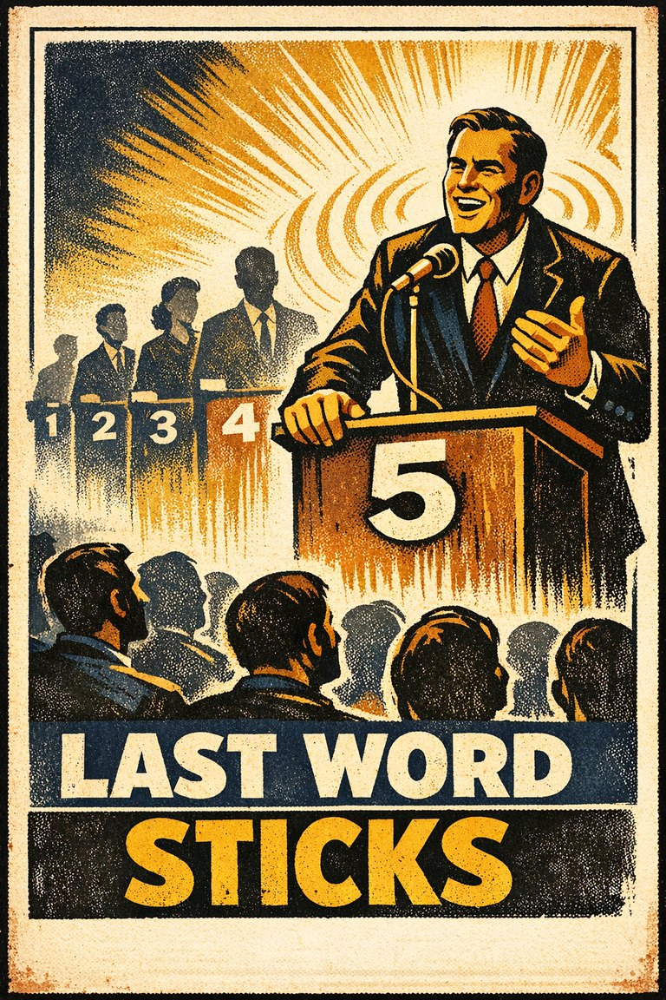
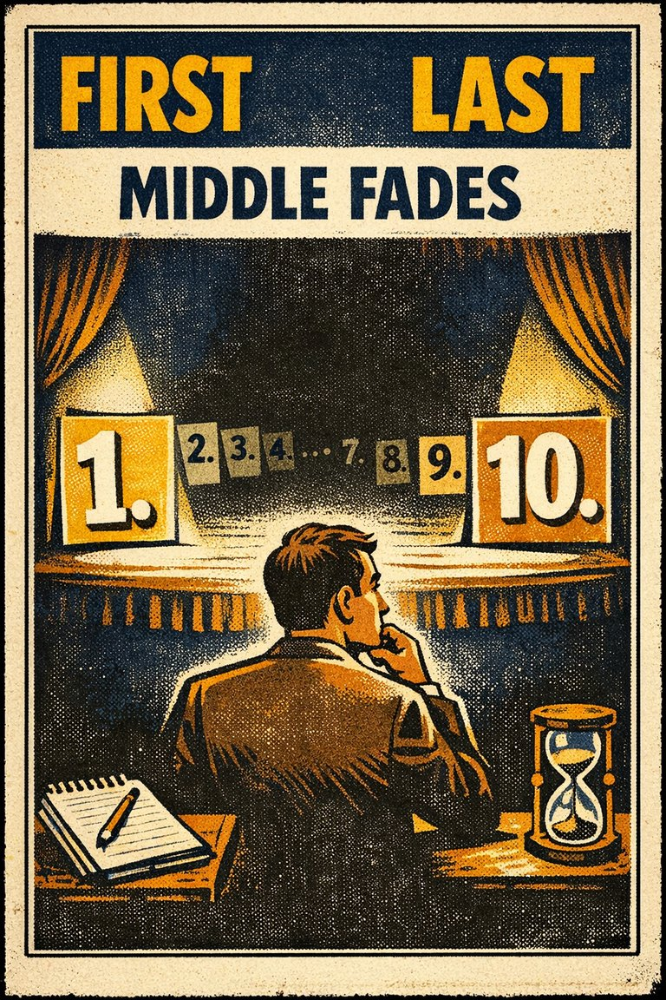

Common in attention shifts
86
Very common with words, products, social topics, and new anxieties.
Rare
Frequent

Cognitive Biases
A practical cognitive-bias site with clear definitions, learning paths, assessments, self-audits, and debiasing tools.
Cognitive Bias
The frequency illusion is that once something has been noticed then every instance of that thing is noticed, leading to the belief it has a high frequency of occurrence (a form of selection bias ). The Baader–Meinhof phenomenon is the illusion where something that has recently come to one's attention suddenly seems to appear with improbable frequency shortly afterwards. It was named after an incidence of frequency illusion in which the Baader–Meinhof Group was mentioned
What it distorts
Biases that selectively reshape memory, retrieval, and retrospective interpretation.
Typical trigger
Situations where recall is already difficult and the baseline cue feels easier to trust than a fuller review.
First countermove
Start with the recall question instead of the first intuitive answer, then check whether the baseline pattern is doing invisible work.
Best use
Quick reference
Did this thing become more common, or did it simply become easier for me to notice?
In recall problems, judgment is pulled by the wrong starting point, default frame, or prior expectation before a fuller check catches up.
These are classroom-facing editorial estimates for comparing how the bias behaves in use. They are teaching aids, not measured statistics.
Common in attention shifts
86
Very common with words, products, social topics, and new anxieties.
Easy to spot from outside
46
Usually becomes visible once the baseline question is posed directly.
Easy to innocently commit
92
The noticing surge feels like environmental change rather than attentional change.
Teaching difficulty
29
Everyday examples make it one of the easiest biases to demonstrate.
This comparison makes the hidden pull easier to see before the technical label has to do all the work.
Biased move
This is like buying a blue car and then mistaking your new antenna for a citywide repainting campaign.
Clearer comparison
Attention can make the world feel newly saturated without the world having changed very much at all. Noticing more is not the same as there being more.
Do not use this label whenever a trend really does exist. Sometimes a thing actually is becoming more common. The issue is that the rise is being inferred from heightened noticing without a stable baseline count.
Use this label when recent salience starts masquerading as evidence of recent prevalence.
Use the quick check, caveat, and nearby confusions together. The fastest diagnosis is often the noisiest one.
Each example changes the surface context while keeping the same hidden distortion in place.
Someone learns a new vocabulary word and then starts reporting that it appears everywhere, as if the language changed overnight.
A team hears about one new compliance risk and begins noticing every faintly similar case, concluding that the issue has exploded in frequency.
After a topic breaks into attention, audiences start treating the surge in noticing as evidence that the phenomenon itself has recently surged.
Once the thing is on your radar, the world suddenly seems saturated with it.
Teaching note: This is a great bridge entry between recall bias and media literacy because the distortion feels so harmless while it is happening.
The strongest debiasing moves change the process, not just the label.
Separate the date you started noticing the pattern from the date you think the pattern became common.
Ask for a baseline count before treating a new noticing wave as a real-world spike.
Track rates over time so salience shocks do not masquerade as trend discovery.
Practice And Repair
Frequency illusion is what happens when attentional tuning gets mistaken for a change in the world being attended to.
A word, category, feature, or risk becomes newly salient because of recent exposure.
The mind begins catching many more instances and experiences the jump as evidence of a real-world increase.
Selective attention and selective memory get read as changing frequency rather than as changing detection.
Separate the date you started noticing the thing from the date you think it genuinely became more common, then look for a count that could arbitrate the difference.
What baseline record would tell me whether the surge is in the world itself or in my current noticing habits?
Spot It
Slow It
Reframe It
These distinction guides slow down the most common nearby-label confusions before the diagnosis hardens.
Availability mistakes ease of recall for prevalence; frequency illusion makes newly noticed things seem suddenly common.
Quick rule: Ask whether the item is easy to recall because it is vivid, or newly salient because attention has been tuned to it.
These are nearby labels that can share the same outer appearance while differing in what actually drives the distortion. Use the overlap, the distinction, and the diagnostic question together before settling the call.
Why it looks similar: Both make what is easy to retrieve feel more important or more probable than it should.
Key distinction: Availability is the wider shortcut from ease of recall to judgment. Frequency illusion is the narrower feeling that recent noticing proves recent prevalence.
Ask: Is an example merely easy to recall, or am I specifically inferring that the world now contains more of it than before?
Why it looks similar: Both involve repeated encounters with the same thing after it gets onto your radar.
Key distinction: Mere exposure changes liking or comfort through repetition. Frequency illusion changes perceived commonness through attention.
Ask: Has repetition changed how much I like or trust it, or has repetition changed how common I think it is?
Why it looks similar: Both can end with a person noticing exactly the cases that fit what they now expect to find.
Key distinction: Confirmation bias selectively gathers support for an established view. Frequency illusion can happen earlier, when sheer new salience is enough to make the world seem crowded with matching cases.
Ask: Am I actively protecting a view, or am I simply mistaking a new noticing pattern for a new population pattern?
These are useful when the label seems roughly right but the process change still feels underspecified.
Did this actually become more common, or did I simply become better at noticing it?
What record would tell me the frequency before the current salience bump?
How much of this rise is in the world and how much is in my attention?
These sourced cases include a few closely related examples where that helps make the same pressure visible in practice.
New word or new car suddenly appearing everywhere
The classic teaching case is learning a new word, buying a car, or noticing a new category and then immediately feeling surrounded by examples that supposedly were not there before.
Why it fits: Attention has changed sharply, and the mind is reading the attentional shift as if it were direct evidence of prevalence.
Language Log / overview cases · 2005 onward
Bad is stronger than good
Research collected under the phrase 'bad is stronger than good' shows that negative events, traits, and feedback often have more psychological impact than comparable positives.
Why it fits: The asymmetry is not only moral or strategic. It is a weighting pattern that makes bad signals dominate the record.
Related through: Negativity bias
2001
These linked tools turn the page into practice instead of leaving it at the level of definition.
This bias appears directly in one guided sequence and also in nearby paths that frame the same judgment problem from a slightly wider angle.
Direct path
Misinformation, Memory, And Crowds
Use this path when a claim is gaining traction partly because it is circulating well rather than because it has been carefully verified.
Nearby path
Use this path when ambiguous behavior is being read through threat, bad faith, or us-versus-them interpretation.
These short audits help catch this bias before it hardens into a verdict, forecast, or decision.
Direct audit
Is this memorable because it is representative, or because it is dramatic and easy to circulate?
Direct audit
What part of this claim's plausibility is coming from repetition, correction failure, or visible uptake rather than from direct support?
There is no dedicated scenario for this bias yet, but these nearby cases test the same kind of pressure and repair move.
Same scenario family · Memory and recall
One ugly incident defines the whole vendor
After one painfully visible failure, a client starts describing an entire vendor relationship as a disaster even though the broader service record has been mostly solid and low-dr…
Same scenario family · Memory and recall
The correction landed, but the old explanation still runs
After a rumor is debunked, people stop repeating the exact false claim but continue drawing conclusions that still depend on the original rumor's causal story.
These neighbors were selected from shared categories, shared patterns, and explicit editorial links where available.

The tendency to remember bizarre or unusual material better than ordinary material.

A smaller percentage of items are remembered in a longer list, but as the length of the list increases, the absolute number of items remembered increases as well.

The tendency to give bad news, threats, criticism, and losses more psychological weight than equally sized positives.

The tendency to remember items at the beginning of a sequence especially well.

A form of serial position effect where an item at the end of a list is easier to recall.

The tendency to remember items at the beginning and end of a sequence better than those in the middle.